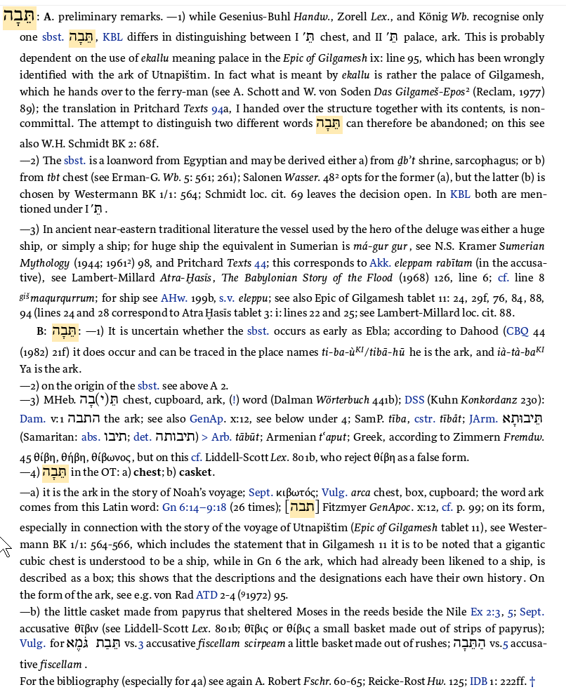

The claim that Hebrew tebah (תֵּבָה) derives from an Egyptian word for chest or coffin has been repeated in biblical lexicography for over 150 years. The standard attribution is to Brugsch (1867). This page examines the primary Egyptological sources directly — Brugsch's own Hieroglyphisch-Demotisches Wörterbuch (1867–1882) and Erman and Grapow's Wörterbuch der Ägyptischen Sprache (1926/1931) — to establish what these sources actually say, and what they do not.
The investigation required direct examination of seven volumes of nineteenth and twentieth century Egyptological lexicography. The findings differ substantially from the received tradition.
If glyphs appear as boxes, install Noto Sans Egyptian Hieroglyphs.
1. What Brugsch Actually Said
Brugsch's Hieroglyphisch-Demotisches Wörterbuch was published in seven volumes between 1867 and 1882. It is the work invariably cited as the origin of the Egyptian etymology of tebah. The relevant entry is found in Volume 4 (1868) at dictionary page 1628, under the Egyptian root teb.

Entry for Egyptian teb / teb-t. Line 3: "Cf. hebr. תָּבָה fem., thald. תַּבּוּתָא, arab. تابوت, griech. θύβη, θήβη, arca, cista." — Brugsch's own hand connecting Egyptian teb to Hebrew tebah. Filed under root TEB, not ḏbt.
Brugsch Vol. 4, dictionary p.1628. Entry for Egyptian teb / teb-t. The Hebrew cross-reference appears in line 3 of the entry.
"die Truhe, der 'Todtenkasten, der Sarkophag,' le cercueil, le sarcophage, la caisse funéraire. Cf. THBE T. T arca sepulthralis."
The chest, the 'coffin, the sarcophagus,' the coffin, the sarcophagus, the funeral casket. Cf. Coptic THBE [Theban dialect] arca sepulthralis.
"Cf. hebr. תָּבָה fem., thald. תַּבּוּתָא, arab. تابوت, griech. θύβη, θήβη, arca, cista."
Cf. Hebrew תָּבָה feminine, Chaldean תַּבּוּתָא, Arabic تابوت, Greek θύβη, θήβη, arca, cista.
1b. Brugsch on Phonological Method
The same volume reveals Brugsch's explicit approach when cross-referencing Egyptian with Semitic cognates. At dictionary page 628 (Vol. 2, 1868), Brugsch discusses the Egyptian word emtebà (finger) and corrects a contemporaneous scholar who had attempted to connect it with tebà:

Brugsch Vol. 2, dictionary p.628. Entry for Egyptian emtebà (finger). Brugsch explicitly rejects Pleyte's phonological equation on the grounds that the words sound differently.
"Hr. Pleyte, Text p. 170, stellt das Wort mit dem ganz anderen lautenden Worte [tebà], dem Prototyp des Kopt. TEB, THB digitus zusammen, wobei er in der Umschreibung seines Textes die Sylbe [sign] ganz übersehen hat. Dies zur Berichtigung."
Mr. Pleyte, Text p.170, places this word together with the quite differently sounding word [tebà], the prototype of the Coptic TEB, THB = digitus (finger), in which he has completely overlooked the syllable [sign] in his transcription. This as a correction.
1c. The Published Source — Erman (1892)
BDB (1906) cites the Egyptian etymology as: "probably Egyptian loan-word from T-b-t, chest, coffin (Brugsch, Erman ZMG xlvi (1892), 123)." This is the citation that entered the tradition. The 1892 article has now been located and examined.

Erman, ZDMG 46 (1892): 123. The ḏbt entry appears third in the D section. The full page shows three consecutive ḏb- entries: ḏb (ship), ḏbt (chest/coffin → tebah), ḏbᶜ (finger).

Closeup of the ḏbt entry. The † (obelus) marks it as a confirmed loanword in Erman's judgement. Attribution: "(Brugsch)" — no page or volume reference given.
† ḏbt (etwa *tēbet) Kasten, Sarg: תֵּבָה Kasten (Brugsch).
† ḏbt (approximately *tēbet) chest, coffin: תֵּבָה chest (Brugsch).
1. The word. Erman writes ḏbt — not ḏb3.t as subsequently cited by HALOT and BDB. These may represent the same Egyptian root in different transliteration conventions, or they may be distinct. This requires Egyptological adjudication.
2. The attribution. Erman writes "(Brugsch)" with no page or volume reference. Direct examination of all seven volumes of Brugsch's Hieroglyphisch-Demotisches Wörterbuch did not locate a ḏbt → tebah equation anywhere. Brugsch's only connection between Egyptian and Hebrew tebah is teb at Vol. 4, p.1628 — a different root. The attribution cannot be verified from the primary source.
3. The obelus. The † mark indicates Erman considered this a confirmed loanword in 1892. He then silently removed the entry from his authoritative Wörterbuch der Ägyptischen Sprache completed 1926 — dropping both the † and the equation entirely. Neither ḏbt nor ḏb3.t carries a Hebrew tebah connection at the pages HALOT cites (Wb. 5:261 and 5:561).
2. What Erman and Grapow Said — and Did Not Say
Erman and Grapow's Wörterbuch der Ägyptischen Sprache (published 1926–1931) superseded Brugsch as the authoritative Egyptian dictionary. Cohen (1972) notes that Erman had initially agreed with the Egyptian etymology of tebah in 1892, but later silently omitted it from the Wörterbuch. Direct examination confirms this — and the 1892 article (section 1c above) shows exactly what was dropped.
HALOT cites Erman-G. Wb. 5: 561; 261 as sources for the Egyptian etymology. Both pages have been examined.
2a. Erman-Grapow Wb. 5: 261 — entry tb.t

Erman-Grapow Wb. Vol. 5, p.261. The tb.t entry. Attested Saite period only. Cross-references ḏb3.t. No Hebrew tebah.
tb.t — belegt Sa[ite period]. Kasten. vgl. ḏb3.t.
tb.t — attested Saite period. Box/chest. cf. ḏb3.t.
2b. Erman-Grapow Wb. 5: 561 — entry ḏb3.t

Erman-Grapow Wb. Vol. 5, pp.560–561. The ḏb3.t entry (shrine/sarcophagus) and adjacent entries. Coptic reflex: TAIBE / TAIBI. No Hebrew tebah.
ḏb3.t — belegt seit Lit.MR. Kopt. TAIBE : TAIBI. Schrein, Sarg.
ḏb3.t — attested since literary Middle Kingdom. Coptic TAIBE : TAIBI. Shrine, sarcophagus.
Compare with Brugsch's teb → Coptic ⲐⲎⲂⲈ (THBE) → Hebrew תָּבָה — where the Coptic form matches.
3. The HALOT Citation
HALOT (the standard modern Hebrew lexicon) cites the Egyptian etymology as follows:

HALOT entry for תֵּבָה. Section A.2 proposes Egyptian derivation from either ḏb't or tbt, citing Erman-G. Wb. 5: 561; 261.
"The sbst. is a loanword from Egyptian and may be derived either a) from ḏb't shrine, sarcophagus; or b) from tbt chest (see Erman-G. Wb. 5: 561; 261)"
4. Summary — What the Sources Actually Say
5. The Phonological Problem
The standard claim — that Hebrew tebah derives from Egyptian ḏb't — rests on a proposed consonant correspondence. Brugsch's actual equation rests on a different one. The two can be compared:
| Source | Egyptian word | Hieroglyphs | Consonants | Coptic reflex | → Hebrew תָּבָה | Phonological verdict |
|---|---|---|---|---|---|---|
| Brugsch (1868) p.1628 | teb / teb-t | 𓏏𓃀 | T – B | THBE / TAIBL | T – B – H | ✅ T→T, B→B. Direct match. Coptic THBE confirms. |
| Later tradition (misattributed to Brugsch) | ḏb3.t / ḏb't | 𓂧𓃀𓇌𓏏𓉐 | Ḏ – B – 3 – T | TAIBE / TAIBI | T – B – H | ❌ Ḏ→T (wrong; should give Hebrew Ṭ). 3→H (no rule). Coptic TAIBE ≠ Hebrew tebah. Feminine T suffix unexplained. |
The phonological correspondence that actually works is Brugsch's own equation: Egyptian teb → Coptic THBE → Hebrew tebah. The tradition that subsequently cited ḏb't as the source departed from Brugsch's actual argument and created a phonologically indefensible equation.
Cohen did not need to address the phonology because the Egyptological grounds were already decisive: ḏb't is never used for boats in Egyptian texts, and cannot therefore be the source of a word used for two life-saving vessels. The phonological failure is an additional and independent objection — one that, to this author's knowledge, has not previously been noted in the literature.
5b. The Complete Dictionary Search
The findings above raise an obvious question: if Brugsch's only tebah connection is at Vol. 4, p.1628 under teb — where is the ḏb3.t → tebah equation that the tradition attributes to him?
To answer this, all seven volumes of Brugsch's Wörterbuch were searched systematically for any connection between Egyptian and Hebrew tebah. The search used three independent methods:
- Full-text OCR search for the Latin word arca (Brugsch's standard Latin gloss for chest/coffin) in proximity to the abbreviation hebr. (his standard marker for Hebrew cognates)
- Full-text search for Hebrew characters תבה / תָּבָה across all volumes
- Full-text search for Sarg / Todtenkasten / sarcophag in proximity to hebr.
Results across all seven volumes:
| Volume | Dict. pages | arca + hebr | Hebrew תבה | Coffin + hebr |
|---|---|---|---|---|
| Vol. 1 (1867) | 1–318 | — | — | — |
| Vol. 2 (1868) | 319–735 | — | — | — |
| Vol. 3 (1868) | 736–? | — | — | — |
| Vol. 4 (1868) | 1149–1728 | p.1628 — teb entry ✓ | — | — |
| Vol. 5 (1880) | ? | — | — | — |
| Vol. 6 (1880) | ?–976 | — | — | — |
| Vol. 7 (1882) | 977–1418 | — | — | — |
One hit across the complete seven-volume dictionary — Vol. 4, p.1628, the teb entry already documented above. No ḏb3.t → tebah equation appears anywhere.
The search also confirmed the converse: where ḏb3.t appears in Brugsch (as a chest, shrine, or sarcophagus word), there is no tebah connection. And where tebah appears, the Egyptian root is teb, not ḏb3.t.
Two Egyptian Coffin Words — Only One Connected to Tebah
The investigation identified two distinct Egyptian words meaning chest/coffin/sarcophagus:
| Egyptian word | Meaning | Coptic reflex | Hebrew tebah connection | Source |
|---|---|---|---|---|
| teb / teb-t 𓏏𓃀 | Chest, coffin, sarcophagus | THBE / TAIBL | ✅ Explicitly connected by Brugsch (1868), Vol. 4, p.1628 | Brugsch Vol. 4 |
| ḏb3.t 𓂧𓃀𓇌𓏏𓉐 | Shrine, sarcophagus | TAIBE / TAIBI | ❌ No connection in Brugsch (all 7 vols.) or Erman-Grapow (Wb. 5:561) | Erman-Grapow Vol. 5 |
The tradition attributed the equation to the wrong word. Whether teb and ḏb3.t are related Egyptian roots, and whether Brugsch's teb → tebah equation is itself phonologically and Egyptologically sound, are questions that require specialist Egyptological evaluation beyond the scope of this investigation. What can be stated is that the equation the tradition has been debating for 150 years — ḏb3.t → tebah — does not appear in its supposed founding source.
The Egyptian etymology of tebah as it appears in modern biblical lexicography rests on a chain of errors:
- The published source of the equation is Erman (1892), ZDMG 46:123 — where it appears as ḏbt (not ḏb3.t), attributed to Brugsch without a page reference, and marked † as a confirmed loanword.
- Brugsch's actual equation was teb → tebah (T-B root, phonologically coherent), not ḏbt → tebah. Direct examination of all seven volumes confirms no ḏbt → tebah equation in Brugsch's dictionary.
- The ḏb3.t equation — the one that generated the "box ark" tradition — does not appear anywhere in Brugsch's seven-volume dictionary. The attribution to Brugsch cannot be verified from the primary source.
- Erman-Grapow's Wörterbuch (1926) makes no Hebrew tebah connection at either page cited by HALOT (Wb. 5:261 and 5:561).
- HALOT cites the 1926 Wörterbuch as authority for a connection the Wörterbuch does not make.
- The phonological correspondence for ḏb3.t → tebah fails on two of three consonants and is contradicted by the Coptic reflex (TAIBE, not THBE).
- Cohen (1972) demolished the equation on Egyptological and semantic grounds. His conclusion — etymology undetermined — has not been rebutted in the 53 years since publication.
- Direct glyph comparison confirms teb and ḏb3.t are different words with different hieroglyphic spellings. Brugsch's teb variants begin with rectangular enclosure signs; ḏb3.t (TLA lemma 183310) begins with the hand glyph D46 (𓂧). The apparent source of the equation ḏb3.t → tebah is a transliteration convention error introduced when Erman retransliterated Brugsch's teb into his newer system in 1892.
- Whether Brugsch's actual equation (teb → tebah) is itself Egyptologically sound requires specialist evaluation. That question has not previously been posed in the literature.
The "box ark" tradition inherits its shape from an equation that does not appear in its founding source, is not supported by the Egyptological lexicography cited in its defence, fails basic phonological scrutiny, and has been Egyptologically demolished without rebuttal for over fifty years.
5c. The Glyph Evidence — Two Different Words
The Thesaurus Linguae Aegyptiae (TLA) — the definitive successor to Erman-Grapow's Wörterbuch — was searched for ḏb3.t. The entry is TLA lemma 183310:
Canonical hieroglyphic spelling: 𓂧𓃀𓉐
| Sign | Gardiner | Value | Description |
|---|---|---|---|
| 𓂧 | D46 | ḏ | Hand — retroflex/affricate consonant |
| 𓃀 | D58 | b | Foot/leg |
| 𓉐 | O4 | — | House/enclosure — determinative (no phonetic value) |
Persistent URL: thesaurus-linguae-aegyptiae.de/lemma/183310
The TLA's canonical spelling of ḏb3.t begins with 𓂧 (D46, the hand). This sign does not appear as the opening glyph in any of Brugsch's teb variants.
teb and ḏb3.t are different words with different hieroglyphic spellings. The opening consonant is different. The sign is different. The Gardiner category is different. These are not the same word rendered in different transliteration conventions — they are distinct lexical entries.
The Transliteration Conversion Error
Between Brugsch (1867–1882) and Erman (1892), Egyptian studies underwent a standardisation of transliteration conventions. Brugsch's system, as his own Vol. 1 sign table confirms, made no distinction between t and ḏ — both were filed under t-variants. Erman's 1892 system introduced the ḏ (retroflex/affricate) as a distinct consonant, represented by the hand glyph D46.
When Erman wrote in 1892 that ḏbt → tebah "(Brugsch)," he was — apparently — retransliterating Brugsch's teb into his newer convention. But the glyph evidence shows this was wrong. Brugsch's teb does not start with D46 (the hand). It starts with rectangular enclosure signs — a different consonant entirely.
The error propagated unchecked because nobody went back to compare the actual hieroglyphs. BDB (1906) copied Erman's transliteration. HALOT (1994) cited Erman-Grapow pages that don't contain the equation. The tradition has been citing a conversion error as its primary source for 130 years.
The ḏb3.t → tebah tradition presents the same structure: a known quantity (teb) entered in one unit system (Brugsch's non-standard transliteration), converted to another system (Erman's modern convention) with an apparent error, the result propagated unchecked through BDB, HALOT, and 130 years of biblical scholarship. Nobody compared the glyphs. The ark has been gliding on momentum ever since.
Cohen (1972) called out the fuel warning on Egyptological grounds. Erman-Grapow (1926) had already quietly noted the gauges were wrong by dropping the equation entirely. The tradition responded by citing the retraction as authority for the equation it retracted.
The 1921 Handwörterbuch — Confirmation of Early Retraction
Erman and Grapow's Aegyptisches Handwörterbuch (1921) — the concise intermediate dictionary published five years before the full Wörterbuch — was also examined. The T section (pp.200–206) contains no tbt or teb entry for chest/coffin. The D section (p.213) contains db, dbn, dbh entries — but no dbt → tebah equation. The entry dp.t (a type of ship) appears on the same page, visually confirming Spiegelberg's observation that db't (chest) and dp.t (ship) are different words with different signs.
By 1921 at the latest — before the full Wörterbuch — Erman had already dropped the equation. BDB (1906) had locked it in fifteen years before Erman could correct it in print. The correction never came, because the Wörterbuch simply omitted the entry without comment. HALOT then cited the omission as authority.
- Richter, Tonio Sebastian, and Daniel A. Werning, eds. Thesaurus Linguae Aegyptiae. Berlin-Brandenburgische Akademie der Wissenschaften. thesaurus-linguae-aegyptiae.de. Lemma 183310 (ḏb3.t, shrine/sarcophagus) examined. Canonical spelling: 𓂧𓃀𓉐 (D46 + D58 + O4). Persistent URL: thesaurus-linguae-aegyptiae.de/lemma/183310.
- Erman, Adolf, and Hermann Grapow. Aegyptisches Handwörterbuch. Berlin: Reuther & Reichard, 1921. T section (pp.200–206) and D section (p.213) examined. No dbt → tebah equation found. dp.t (ship) confirmed as distinct from db entries. Zeitschrift der Deutschen Morgenländischen Gesellschaft 46 (1892): 123. The published source of the ḏbt → tebah equation, attributed to Brugsch without a location reference. Examined directly via JSTOR.
- Brugsch, Heinrich. Hieroglyphisch-Demotisches Wörterbuch. 7 vols. Leipzig: J.C. Hinrichs, 1867–1882. All seven volumes searched in full. Hebrew tebah connection found at Vol. 4 (dict. p.1628) only, under root teb. No ḏbt or ḏb3.t → tebah equation located in any volume.
- Erman, Adolf, and Hermann Grapow. Wörterbuch der Ägyptischen Sprache. 7 vols. Leipzig: J.C. Hinrichs, 1926–1961. Vol. 5 (pp.261, 561–563). No Hebrew tebah connection at either HALOT-cited page.
- Koehler, Ludwig, Walter Baumgartner, et al. The Hebrew and Aramaic Lexicon of the Old Testament. Leiden: Brill, 1994–2000. Entry: תֵּבָה.
- Cohen, Chayim. "Hebrew tbh: Proposed Etymologies." Journal of the Ancient Near Eastern Society 4 (1972): 37–51.